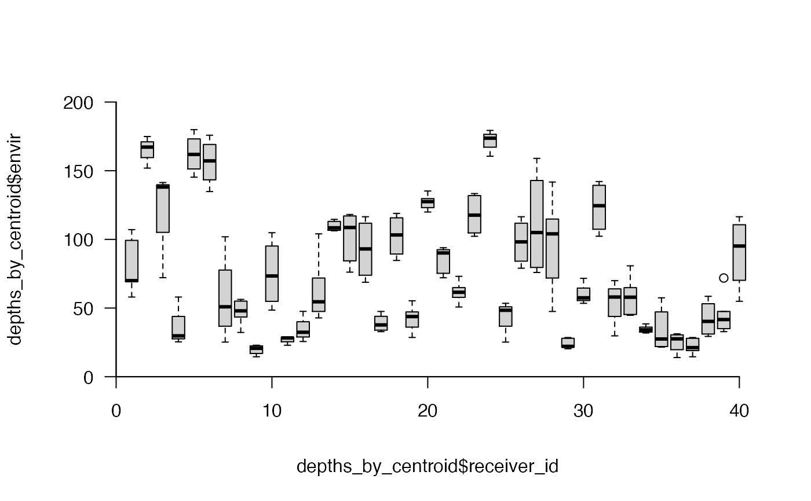

R/get_detections.R
get_detection_centroids_envir.RdThis function is used to sample environmental conditions from within the detection centroids of receivers. To implement the function, a SpatialPoints object that defines receiver locations (xy) must be provided, along with the detection range (detection_range) of receivers. This information is used to define detection centroids, via get_detection_centroids. Within each receiver's centroid, all values of an environmental variable, or a random sample of values, are extracted from a user-defined raster (envir). Under random sampling, values can be sampled according to a detection probability function (sample_probs). The function returns a list of dataframes, one for each receiver, that include the sampled values.
get_detection_centroids_envir( xy, detection_range, coastline, plot = FALSE, envir, sample_size = NULL, sample_replace = TRUE, sample_probs = NULL, cl = NULL, varlist = NULL, verbose = TRUE, ... )
| xy, detection_range, coastline, plot, ... | Arguments required to calculate and visualise detection centroids via |
|---|---|
| envir | A |
| sample_size | (optional) An integer that defines the number of samples of the environmental variable to draw from the area around each receiver (see the `size' argument of |
| sample_replace | (optional) If |
| sample_probs | (optional) If |
| cl, varlist | (optional) Parallelisation options. |
| verbose | A logical variable that defines whether or not relay messages to the console to monitor function progress. |
The function returns a list of dataframes (one for each element in xy; i.e., each receiver), each of which includes the cell IDs of envir from which values were extracted (`cell'), the value of the environmental variable in that cell (`envir') and, if applicable, the distance between that cell and the receiver (`dist', m) and the detection probability in that cell (`prob').
Edward Lavender
#### Define receiver locations as a SpatialPoints object with a UTM CRS proj_wgs84 <- sp::CRS(SRS_string = "EPSG:4326") proj_utm <- sp::CRS(SRS_string = "EPSG:32629") xy <- sp::SpatialPoints(dat_moorings[, c("receiver_long", "receiver_lat")], proj_wgs84) xy <- sp::spTransform(xy, proj_utm) #### Example (1): Extract all depth values within each receiver's centroid depths_by_centroid <- get_detection_centroids_envir(xy = xy, detection_range = 425, coastline = dat_coast, envir = dat_gebco )#> flapper::get_detection_centroids_envir() called (@ 2021-12-02 14:39:16)... #> ... Implementing function checks... #> ... Defining detection centroid(s)... #> ... Extracting environmental conditions from detection area(s)...# The function returns a list of dataframes, one for each receiver # ... with the cell IDs and the value of the environmental variable utils::str(depths_by_centroid)#> List of 40 #> $ :'data.frame': 5 obs. of 2 variables: #> ..$ cell : num [1:5] 3003 3004 3076 3077 3078 #> ..$ envir: num [1:5] 58 69.9 69.2 99.3 107.1 #> $ :'data.frame': 3 obs. of 2 variables: #> ..$ cell : num [1:3] 869 870 871 #> ..$ envir: num [1:3] 175 167 152 #> $ :'data.frame': 3 obs. of 2 variables: #> ..$ cell : num [1:3] 643 644 645 #> ..$ envir: num [1:3] 72.1 138.1 141.4 #> $ :'data.frame': 4 obs. of 2 variables: #> ..$ cell : num [1:4] 3000 3001 3002 3003 #> ..$ envir: num [1:4] NA 25.4 29.8 58 #> $ :'data.frame': 4 obs. of 2 variables: #> ..$ cell : num [1:4] 860 861 862 863 #> ..$ envir: num [1:4] 145 157 166 180 #> $ :'data.frame': 4 obs. of 2 variables: #> ..$ cell : num [1:4] 871 944 945 946 #> ..$ envir: num [1:4] 152 176 162 135 #> $ :'data.frame': 4 obs. of 2 variables: #> ..$ cell : num [1:4] 1067 1068 1069 1142 #> ..$ envir: num [1:4] 53.5 48.4 25.2 101.9 #> $ :'data.frame': 6 obs. of 2 variables: #> ..$ cell : num [1:6] 1679 1680 1752 1753 1754 ... #> ..$ envir: num [1:6] 49 43.5 56.3 55 46.9 ... #> $ :'data.frame': 4 obs. of 2 variables: #> ..$ cell : num [1:4] 1285 1286 1287 1360 #> ..$ envir: num [1:4] 14.5 22 22.9 19.3 #> $ :'data.frame': 4 obs. of 2 variables: #> ..$ cell : num [1:4] 3233 3234 3235 3308 #> ..$ envir: num [1:4] 104.9 85.5 61.3 48.5 #> $ :'data.frame': 4 obs. of 2 variables: #> ..$ cell : num [1:4] 1212 1213 1214 1287 #> ..$ envir: num [1:4] 28 28.5 28.8 22.9 #> $ :'data.frame': 4 obs. of 2 variables: #> ..$ cell : num [1:4] 1681 1682 1683 1755 #> ..$ envir: num [1:4] 47.6 25.6 32.5 32.2 #> $ :'data.frame': 6 obs. of 2 variables: #> ..$ cell : num [1:6] 3161 3162 3163 3235 3236 ... #> ..$ envir: num [1:6] 104 71.9 47.5 61.3 47.9 ... #> $ :'data.frame': 5 obs. of 2 variables: #> ..$ cell : num [1:5] 3587 3588 3660 3661 3662 #> ..$ envir: num [1:5] 107 113 106 108 115 #> $ :'data.frame': 5 obs. of 2 variables: #> ..$ cell : num [1:5] 830 831 832 904 905 #> ..$ envir: num [1:5] 117.1 118.1 108.7 76.1 84.4 #> $ :'data.frame': 4 obs. of 2 variables: #> ..$ cell : num [1:4] 3229 3230 3231 3232 #> ..$ envir: num [1:4] 68.8 79 107.1 116.5 #> $ :'data.frame': 4 obs. of 2 variables: #> ..$ cell : num [1:4] 3163 3164 3165 3238 #> ..$ envir: num [1:4] 47.5 40.4 32.8 35 #> $ :'data.frame': 4 obs. of 2 variables: #> ..$ cell : num [1:4] 3153 3154 3155 3156 #> ..$ envir: num [1:4] 118.9 112.5 94 84.7 #> $ :'data.frame': 5 obs. of 2 variables: #> ..$ cell : num [1:5] 1531 1532 1604 1605 1606 #> ..$ envir: num [1:5] 43.8 28.6 55.3 47.2 36.1 #> $ :'data.frame': 5 obs. of 2 variables: #> ..$ cell : num [1:5] 2866 2867 2868 2940 2941 #> ..$ envir: num [1:5] 135 123 120 130 127 #> $ :'data.frame': 6 obs. of 2 variables: #> ..$ cell : num [1:6] 3374 3375 3376 3448 3449 ... #> ..$ envir: num [1:6] 72.1 75.3 90.4 89.9 92.5 ... #> $ :'data.frame': 5 obs. of 2 variables: #> ..$ cell : num [1:5] 1749 1750 1751 1824 1825 #> ..$ envir: num [1:5] 50.8 61.5 57.8 64.9 73.1 #> $ :'data.frame': 6 obs. of 2 variables: #> ..$ cell : num [1:6] 1222 1223 1224 1296 1297 ... #> ..$ envir: num [1:6] 131 132 133 105 102 ... #> $ :'data.frame': 3 obs. of 2 variables: #> ..$ cell : num [1:3] 794 795 796 #> ..$ envir: num [1:3] 179 174 161 #> $ :'data.frame': 4 obs. of 2 variables: #> ..$ cell : num [1:4] 994 1067 1068 1069 #> ..$ envir: num [1:4] NA 53.5 48.4 25.2 #> $ :'data.frame': 4 obs. of 2 variables: #> ..$ cell : num [1:4] 3230 3231 3232 3305 #> ..$ envir: num [1:4] 79 107.1 116.5 89.3 #> $ :'data.frame': 4 obs. of 2 variables: #> ..$ cell : num [1:4] 1018 1019 1020 1093 #> ..$ envir: num [1:4] 159 126.8 83.2 75.9 #> $ :'data.frame': 5 obs. of 2 variables: #> ..$ cell : num [1:5] 3087 3088 3161 3162 3163 #> ..$ envir: num [1:5] 141.8 114.8 104 71.9 47.5 #> $ :'data.frame': 6 obs. of 2 variables: #> ..$ cell : num [1:6] 1137 1138 1139 1211 1212 ... #> ..$ envir: num [1:6] 22.2 21.6 22 20.4 28 ... #> $ :'data.frame': 3 obs. of 2 variables: #> ..$ cell : num [1:3] 1065 1066 1067 #> ..$ envir: num [1:3] 57.5 71.6 53.5 #> $ :'data.frame': 4 obs. of 2 variables: #> ..$ cell : num [1:4] 3079 3080 3081 3154 #> ..$ envir: num [1:4] 102 137 142 112 #> $ :'data.frame': 3 obs. of 2 variables: #> ..$ cell : num [1:3] 3002 3003 3004 #> ..$ envir: num [1:3] 29.8 58 69.9 #> $ :'data.frame': 6 obs. of 2 variables: #> ..$ cell : num [1:6] 1898 1899 1900 1972 1973 ... #> ..$ envir: num [1:6] 60 80.7 64.9 45.3 55.8 ... #> $ :'data.frame': 6 obs. of 2 variables: #> ..$ cell : num [1:6] 1895 1896 1897 1969 1970 ... #> ..$ envir: num [1:6] 31.9 32.5 38.5 34.5 33.8 ... #> $ :'data.frame': 6 obs. of 2 variables: #> ..$ cell : num [1:6] 1064 1065 1137 1138 1139 ... #> ..$ envir: num [1:6] 32.7 57.5 22.2 21.6 22 ... #> $ :'data.frame': 5 obs. of 2 variables: #> ..$ cell : num [1:5] 2927 2928 2929 3001 3002 #> ..$ envir: num [1:5] NA 14 31.2 25.4 29.8 #> $ :'data.frame': 6 obs. of 2 variables: #> ..$ cell : num [1:6] 1210 1211 1212 1213 1285 ... #> ..$ envir: num [1:6] 19 20.4 28 28.5 14.5 ... #> $ :'data.frame': 4 obs. of 2 variables: #> ..$ cell : num [1:4] 3165 3166 3167 3168 #> ..$ envir: num [1:4] 32.8 47.7 58.5 29.4 #> $ :'data.frame': 6 obs. of 2 variables: #> ..$ cell : num [1:6] 3162 3163 3164 3165 3237 ... #> ..$ envir: num [1:6] 71.9 47.5 40.4 32.8 42.8 ... #> $ :'data.frame': 4 obs. of 2 variables: #> ..$ cell : num [1:4] 3232 3233 3234 3307 #> ..$ envir: num [1:4] 116.5 104.9 85.5 54.9# Collapse the list and compare conditions across receivers depths_by_centroid <- lapply(1:length(depths_by_centroid), function(i){ d <- depths_by_centroid[[i]] d$receiver_id <- dat_moorings$receiver_id[i] return(d) }) depths_by_centroid <- dplyr::bind_rows(depths_by_centroid) prettyGraphics::pretty_boxplot(depths_by_centroid$receiver_id, depths_by_centroid$envir)#>#>#### Example (2): Extract a random sample of values # (We'll keep the values small for speed) depths_by_centroid <- get_detection_centroids_envir(xy = xy, detection_range = 425, coastline = dat_coast, envir = dat_gebco, sample_size = 2 )#> flapper::get_detection_centroids_envir() called (@ 2021-12-02 14:39:18)... #> ... Implementing function checks... #> ... Defining detection centroid(s)... #> ... Extracting environmental conditions from detection area(s)...#> List of 40 #> $ :'data.frame': 2 obs. of 2 variables: #> ..$ cell : num [1:2] 3077 3077 #> ..$ envir: num [1:2] 99.3 99.3 #> $ :'data.frame': 2 obs. of 2 variables: #> ..$ cell : num [1:2] 871 871 #> ..$ envir: num [1:2] 152 152 #> $ :'data.frame': 2 obs. of 2 variables: #> ..$ cell : num [1:2] 644 644 #> ..$ envir: num [1:2] 138 138 #> $ :'data.frame': 2 obs. of 2 variables: #> ..$ cell : num [1:2] 3001 3000 #> ..$ envir: num [1:2] 25.4 NA #> $ :'data.frame': 2 obs. of 2 variables: #> ..$ cell : num [1:2] 862 862 #> ..$ envir: num [1:2] 166 166 #> $ :'data.frame': 2 obs. of 2 variables: #> ..$ cell : num [1:2] 946 871 #> ..$ envir: num [1:2] 135 152 #> $ :'data.frame': 2 obs. of 2 variables: #> ..$ cell : num [1:2] 1069 1068 #> ..$ envir: num [1:2] 25.2 48.4 #> $ :'data.frame': 2 obs. of 2 variables: #> ..$ cell : num [1:2] 1755 1754 #> ..$ envir: num [1:2] 32.2 46.9 #> $ :'data.frame': 2 obs. of 2 variables: #> ..$ cell : num [1:2] 1285 1287 #> ..$ envir: num [1:2] 14.5 22.9 #> $ :'data.frame': 2 obs. of 2 variables: #> ..$ cell : num [1:2] 3235 3235 #> ..$ envir: num [1:2] 61.3 61.3 #> $ :'data.frame': 2 obs. of 2 variables: #> ..$ cell : num [1:2] 1287 1214 #> ..$ envir: num [1:2] 22.9 28.8 #> $ :'data.frame': 2 obs. of 2 variables: #> ..$ cell : num [1:2] 1683 1755 #> ..$ envir: num [1:2] 32.5 32.2 #> $ :'data.frame': 2 obs. of 2 variables: #> ..$ cell : num [1:2] 3237 3161 #> ..$ envir: num [1:2] 42.8 104 #> $ :'data.frame': 2 obs. of 2 variables: #> ..$ cell : num [1:2] 3661 3661 #> ..$ envir: num [1:2] 108 108 #> $ :'data.frame': 2 obs. of 2 variables: #> ..$ cell : num [1:2] 831 905 #> ..$ envir: num [1:2] 118.1 84.4 #> $ :'data.frame': 2 obs. of 2 variables: #> ..$ cell : num [1:2] 3231 3231 #> ..$ envir: num [1:2] 107 107 #> $ :'data.frame': 2 obs. of 2 variables: #> ..$ cell : num [1:2] 3238 3165 #> ..$ envir: num [1:2] 35 32.8 #> $ :'data.frame': 2 obs. of 2 variables: #> ..$ cell : num [1:2] 3155 3154 #> ..$ envir: num [1:2] 94 112 #> $ :'data.frame': 2 obs. of 2 variables: #> ..$ cell : num [1:2] 1532 1604 #> ..$ envir: num [1:2] 28.6 55.3 #> $ :'data.frame': 2 obs. of 2 variables: #> ..$ cell : num [1:2] 2941 2867 #> ..$ envir: num [1:2] 127 123 #> $ :'data.frame': 2 obs. of 2 variables: #> ..$ cell : num [1:2] 3375 3449 #> ..$ envir: num [1:2] 75.3 92.5 #> $ :'data.frame': 2 obs. of 2 variables: #> ..$ cell : num [1:2] 1824 1824 #> ..$ envir: num [1:2] 64.9 64.9 #> $ :'data.frame': 2 obs. of 2 variables: #> ..$ cell : num [1:2] 1222 1297 #> ..$ envir: num [1:2] 131 102 #> $ :'data.frame': 2 obs. of 2 variables: #> ..$ cell : num [1:2] 796 795 #> ..$ envir: num [1:2] 161 174 #> $ :'data.frame': 2 obs. of 2 variables: #> ..$ cell : num [1:2] 994 1067 #> ..$ envir: num [1:2] NA 53.5 #> $ :'data.frame': 2 obs. of 2 variables: #> ..$ cell : num [1:2] 3305 3230 #> ..$ envir: num [1:2] 89.3 79 #> $ :'data.frame': 2 obs. of 2 variables: #> ..$ cell : num [1:2] 1093 1019 #> ..$ envir: num [1:2] 75.9 126.8 #> $ :'data.frame': 2 obs. of 2 variables: #> ..$ cell : num [1:2] 3161 3087 #> ..$ envir: num [1:2] 104 142 #> $ :'data.frame': 2 obs. of 2 variables: #> ..$ cell : num [1:2] 1213 1211 #> ..$ envir: num [1:2] 28.5 20.4 #> $ :'data.frame': 2 obs. of 2 variables: #> ..$ cell : num [1:2] 1067 1065 #> ..$ envir: num [1:2] 53.5 57.5 #> $ :'data.frame': 2 obs. of 2 variables: #> ..$ cell : num [1:2] 3079 3080 #> ..$ envir: num [1:2] 102 137 #> $ :'data.frame': 2 obs. of 2 variables: #> ..$ cell : num [1:2] 3003 3002 #> ..$ envir: num [1:2] 58 29.8 #> $ :'data.frame': 2 obs. of 2 variables: #> ..$ cell : num [1:2] 1973 1974 #> ..$ envir: num [1:2] 55.8 44.7 #> $ :'data.frame': 2 obs. of 2 variables: #> ..$ cell : num [1:2] 1895 1971 #> ..$ envir: num [1:2] 31.9 36.1 #> $ :'data.frame': 2 obs. of 2 variables: #> ..$ cell : num [1:2] 1140 1138 #> ..$ envir: num [1:2] 47.2 21.6 #> $ :'data.frame': 2 obs. of 2 variables: #> ..$ cell : num [1:2] 3001 2927 #> ..$ envir: num [1:2] 25.4 NA #> $ :'data.frame': 2 obs. of 2 variables: #> ..$ cell : num [1:2] 1285 1286 #> ..$ envir: num [1:2] 14.5 22 #> $ :'data.frame': 2 obs. of 2 variables: #> ..$ cell : num [1:2] 3165 3167 #> ..$ envir: num [1:2] 32.8 58.5 #> $ :'data.frame': 2 obs. of 2 variables: #> ..$ cell : num [1:2] 3237 3163 #> ..$ envir: num [1:2] 42.8 47.5 #> $ :'data.frame': 2 obs. of 2 variables: #> ..$ cell : num [1:2] 3307 3307 #> ..$ envir: num [1:2] 54.9 54.9#### Example (3) Extract a random sample of values with weighted probabilities # Define detection probability function based only on distance calc_detection_pr <- function(dist){ dpr <- get_detection_pr(distance = dist, beta_0 = 2.5, beta_1 = -0.01, inv_link = stats::plogis, output = 2L) return(dpr) } # Implement sampling with replacement according to detection probability depths_by_centroid <- get_detection_centroids_envir(xy = xy, detection_range = 425, coastline = dat_coast, envir = dat_gebco, sample_size = 2, sample_probs = calc_detection_pr )#> flapper::get_detection_centroids_envir() called (@ 2021-12-02 14:39:20)... #> ... Implementing function checks... #> ... Defining detection centroid(s)... #> ... Extracting environmental conditions from detection area(s)...# Each element of the outputted list includes the 'cell' and 'envir' column # ... as well as 'dist' and 'prob' that define the distance of that cell # ... from the location in xy and the corresponding detection probability # ... at that distance respectively utils::str(depths_by_centroid)#> List of 40 #> $ :'data.frame': 2 obs. of 4 variables: #> ..$ cell : num [1:2] 3003 3078 #> ..$ envir: num [1:2] 58 107 #> ..$ dist : num [1:2] 63.6 260.8 #> ..$ prob : num [1:2] 0.866 0.473 #> $ :'data.frame': 2 obs. of 4 variables: #> ..$ cell : num [1:2] 870 870 #> ..$ envir: num [1:2] 167 167 #> ..$ dist : num [1:2] 4.13 4.13 #> ..$ prob : num [1:2] 0.921 0.921 #> $ :'data.frame': 2 obs. of 4 variables: #> ..$ cell : num [1:2] 645 645 #> ..$ envir: num [1:2] 141 141 #> ..$ dist : num [1:2] 209 209 #> ..$ prob : num [1:2] 0.6 0.6 #> $ :'data.frame': 2 obs. of 4 variables: #> ..$ cell : num [1:2] 3001 3002 #> ..$ envir: num [1:2] 25.4 29.8 #> ..$ dist : num [1:2] 143 122 #> ..$ prob : num [1:2] 0.744 0.782 #> $ :'data.frame': 2 obs. of 4 variables: #> ..$ cell : num [1:2] 861 862 #> ..$ envir: num [1:2] 157 166 #> ..$ dist : num [1:2] 99.8 157.3 #> ..$ prob : num [1:2] 0.818 0.716 #> $ :'data.frame': 2 obs. of 4 variables: #> ..$ cell : num [1:2] 944 944 #> ..$ envir: num [1:2] 176 176 #> ..$ dist : num [1:2] 326 326 #> ..$ prob : num [1:2] 0.318 0.318 #> $ :'data.frame': 2 obs. of 4 variables: #> ..$ cell : num [1:2] 1069 1068 #> ..$ envir: num [1:2] 25.2 48.4 #> ..$ dist : num [1:2] 228 56 #> ..$ prob : num [1:2] 0.554 0.874 #> $ :'data.frame': 2 obs. of 4 variables: #> ..$ cell : num [1:2] 1755 1755 #> ..$ envir: num [1:2] 32.2 32.2 #> ..$ dist : num [1:2] 338 338 #> ..$ prob : num [1:2] 0.293 0.293 #> $ :'data.frame': 2 obs. of 4 variables: #> ..$ cell : num [1:2] 1285 1285 #> ..$ envir: num [1:2] 14.5 14.5 #> ..$ dist : num [1:2] 215 215 #> ..$ prob : num [1:2] 0.587 0.587 #> $ :'data.frame': 2 obs. of 4 variables: #> ..$ cell : num [1:2] 3234 3233 #> ..$ envir: num [1:2] 85.5 104.9 #> ..$ dist : num [1:2] 58.9 45.5 #> ..$ prob : num [1:2] 0.871 0.885 #> $ :'data.frame': 2 obs. of 4 variables: #> ..$ cell : num [1:2] 1212 1212 #> ..$ envir: num [1:2] 28 28 #> ..$ dist : num [1:2] 195 195 #> ..$ prob : num [1:2] 0.634 0.634 #> $ :'data.frame': 2 obs. of 4 variables: #> ..$ cell : num [1:2] 1683 1682 #> ..$ envir: num [1:2] 32.5 25.6 #> ..$ dist : num [1:2] 391 192 #> ..$ prob : num [1:2] 0.197 0.642 #> $ :'data.frame': 2 obs. of 4 variables: #> ..$ cell : num [1:2] 3236 3236 #> ..$ envir: num [1:2] 47.9 47.9 #> ..$ dist : num [1:2] 212 212 #> ..$ prob : num [1:2] 0.594 0.594 #> $ :'data.frame': 2 obs. of 4 variables: #> ..$ cell : num [1:2] 3661 3662 #> ..$ envir: num [1:2] 108 115 #> ..$ dist : num [1:2] 125 235 #> ..$ prob : num [1:2] 0.778 0.538 #> $ :'data.frame': 2 obs. of 4 variables: #> ..$ cell : num [1:2] 831 830 #> ..$ envir: num [1:2] 118 117 #> ..$ dist : num [1:2] 204 215 #> ..$ prob : num [1:2] 0.614 0.587 #> $ :'data.frame': 2 obs. of 4 variables: #> ..$ cell : num [1:2] 3231 3230 #> ..$ envir: num [1:2] 107 79 #> ..$ dist : num [1:2] 65.2 95.5 #> ..$ prob : num [1:2] 0.864 0.824 #> $ :'data.frame': 2 obs. of 4 variables: #> ..$ cell : num [1:2] 3165 3238 #> ..$ envir: num [1:2] 32.8 35 #> ..$ dist : num [1:2] 241 370 #> ..$ prob : num [1:2] 0.522 0.231 #> $ :'data.frame': 2 obs. of 4 variables: #> ..$ cell : num [1:2] 3154 3155 #> ..$ envir: num [1:2] 112 94 #> ..$ dist : num [1:2] 148 131 #> ..$ prob : num [1:2] 0.736 0.767 #> $ :'data.frame': 2 obs. of 4 variables: #> ..$ cell : num [1:2] 1531 1532 #> ..$ envir: num [1:2] 43.8 28.6 #> ..$ dist : num [1:2] 295 302 #> ..$ prob : num [1:2] 0.39 0.372 #> $ :'data.frame': 2 obs. of 4 variables: #> ..$ cell : num [1:2] 2866 2866 #> ..$ envir: num [1:2] 135 135 #> ..$ dist : num [1:2] 248 248 #> ..$ prob : num [1:2] 0.506 0.506 #> $ :'data.frame': 2 obs. of 4 variables: #> ..$ cell : num [1:2] 3449 3376 #> ..$ envir: num [1:2] 92.5 90.4 #> ..$ dist : num [1:2] 281 339 #> ..$ prob : num [1:2] 0.423 0.291 #> $ :'data.frame': 2 obs. of 4 variables: #> ..$ cell : num [1:2] 1824 1750 #> ..$ envir: num [1:2] 64.9 61.5 #> ..$ dist : num [1:2] 292 194 #> ..$ prob : num [1:2] 0.398 0.635 #> $ :'data.frame': 2 obs. of 4 variables: #> ..$ cell : num [1:2] 1296 1223 #> ..$ envir: num [1:2] 105 132 #> ..$ dist : num [1:2] 335 204 #> ..$ prob : num [1:2] 0.3 0.614 #> $ :'data.frame': 2 obs. of 4 variables: #> ..$ cell : num [1:2] 794 795 #> ..$ envir: num [1:2] 179 174 #> ..$ dist : num [1:2] 177.6 82.1 #> ..$ prob : num [1:2] 0.674 0.843 #> $ :'data.frame': 2 obs. of 4 variables: #> ..$ cell : num [1:2] 1068 1068 #> ..$ envir: num [1:2] 48.4 48.4 #> ..$ dist : num [1:2] 56 56 #> ..$ prob : num [1:2] 0.874 0.874 #> $ :'data.frame': 2 obs. of 4 variables: #> ..$ cell : num [1:2] 3230 3231 #> ..$ envir: num [1:2] 79 107 #> ..$ dist : num [1:2] 95.5 65.2 #> ..$ prob : num [1:2] 0.824 0.864 #> $ :'data.frame': 2 obs. of 4 variables: #> ..$ cell : num [1:2] 1093 1019 #> ..$ envir: num [1:2] 75.9 126.8 #> ..$ dist : num [1:2] 352 141 #> ..$ prob : num [1:2] 0.265 0.749 #> $ :'data.frame': 2 obs. of 4 variables: #> ..$ cell : num [1:2] 3163 3163 #> ..$ envir: num [1:2] 47.5 47.5 #> ..$ dist : num [1:2] 144 144 #> ..$ prob : num [1:2] 0.742 0.742 #> $ :'data.frame': 2 obs. of 4 variables: #> ..$ cell : num [1:2] 1137 1213 #> ..$ envir: num [1:2] 22.2 28.5 #> ..$ dist : num [1:2] 353.2 67.5 #> ..$ prob : num [1:2] 0.263 0.861 #> $ :'data.frame': 2 obs. of 4 variables: #> ..$ cell : num [1:2] 1067 1066 #> ..$ envir: num [1:2] 53.5 71.6 #> ..$ dist : num [1:2] 293.7 61.9 #> ..$ prob : num [1:2] 0.393 0.868 #> $ :'data.frame': 2 obs. of 4 variables: #> ..$ cell : num [1:2] 3154 3154 #> ..$ envir: num [1:2] 112 112 #> ..$ dist : num [1:2] 148 148 #> ..$ prob : num [1:2] 0.736 0.736 #> $ :'data.frame': 2 obs. of 4 variables: #> ..$ cell : num [1:2] 3002 3002 #> ..$ envir: num [1:2] 29.8 29.8 #> ..$ dist : num [1:2] 122 122 #> ..$ prob : num [1:2] 0.782 0.782 #> $ :'data.frame': 2 obs. of 4 variables: #> ..$ cell : num [1:2] 1899 1898 #> ..$ envir: num [1:2] 80.7 60 #> ..$ dist : num [1:2] 186 291 #> ..$ prob : num [1:2] 0.654 0.399 #> $ :'data.frame': 2 obs. of 4 variables: #> ..$ cell : num [1:2] 1970 1897 #> ..$ envir: num [1:2] 33.8 38.5 #> ..$ dist : num [1:2] 234 329 #> ..$ prob : num [1:2] 0.54 0.312 #> $ :'data.frame': 2 obs. of 4 variables: #> ..$ cell : num [1:2] 1065 1065 #> ..$ envir: num [1:2] 57.5 57.5 #> ..$ dist : num [1:2] 196 196 #> ..$ prob : num [1:2] 0.631 0.631 #> $ :'data.frame': 2 obs. of 4 variables: #> ..$ cell : num [1:2] 3002 2928 #> ..$ envir: num [1:2] 29.8 14 #> ..$ dist : num [1:2] 122 246 #> ..$ prob : num [1:2] 0.782 0.51 #> $ :'data.frame': 2 obs. of 4 variables: #> ..$ cell : num [1:2] 1213 1213 #> ..$ envir: num [1:2] 28.5 28.5 #> ..$ dist : num [1:2] 67.5 67.5 #> ..$ prob : num [1:2] 0.861 0.861 #> $ :'data.frame': 2 obs. of 4 variables: #> ..$ cell : num [1:2] 3167 3165 #> ..$ envir: num [1:2] 58.5 32.8 #> ..$ dist : num [1:2] 121 241 #> ..$ prob : num [1:2] 0.784 0.522 #> $ :'data.frame': 2 obs. of 4 variables: #> ..$ cell : num [1:2] 3163 3165 #> ..$ envir: num [1:2] 47.5 32.8 #> ..$ dist : num [1:2] 144 241 #> ..$ prob : num [1:2] 0.742 0.522 #> $ :'data.frame': 2 obs. of 4 variables: #> ..$ cell : num [1:2] 3232 3234 #> ..$ envir: num [1:2] 116.5 85.5 #> ..$ dist : num [1:2] 231.2 58.9 #> ..$ prob : num [1:2] 0.547 0.871#### Example (4) Sampling without replacement via sample_replace = FALSE depths_by_centroid <- get_detection_centroids_envir(xy = xy, detection_range = 425, coastline = dat_coast, envir = dat_gebco, sample_size = 2, sample_probs = calc_detection_pr, sample_replace = FALSE )#> flapper::get_detection_centroids_envir() called (@ 2021-12-02 14:39:23)... #> ... Implementing function checks... #> ... Defining detection centroid(s)... #> ... Extracting environmental conditions from detection area(s)...#> List of 40 #> $ :'data.frame': 2 obs. of 4 variables: #> ..$ cell : num [1:2] 3003 3077 #> ..$ envir: num [1:2] 58 99.3 #> ..$ dist : num [1:2] 63.6 177.7 #> ..$ prob : num [1:2] 0.866 0.673 #> $ :'data.frame': 2 obs. of 4 variables: #> ..$ cell : num [1:2] 870 871 #> ..$ envir: num [1:2] 167 152 #> ..$ dist : num [1:2] 4.13 254.84 #> ..$ prob : num [1:2] 0.921 0.488 #> $ :'data.frame': 2 obs. of 4 variables: #> ..$ cell : num [1:2] 644 643 #> ..$ envir: num [1:2] 138.1 72.1 #> ..$ dist : num [1:2] 54.8 307 #> ..$ prob : num [1:2] 0.876 0.361 #> $ :'data.frame': 2 obs. of 4 variables: #> ..$ cell : num [1:2] 3003 3002 #> ..$ envir: num [1:2] 58 29.8 #> ..$ dist : num [1:2] 63.6 122.4 #> ..$ prob : num [1:2] 0.866 0.782 #> $ :'data.frame': 2 obs. of 4 variables: #> ..$ cell : num [1:2] 862 863 #> ..$ envir: num [1:2] 166 180 #> ..$ dist : num [1:2] 157 414 #> ..$ prob : num [1:2] 0.716 0.162 #> $ :'data.frame': 2 obs. of 4 variables: #> ..$ cell : num [1:2] 945 946 #> ..$ envir: num [1:2] 162 135 #> ..$ dist : num [1:2] 87.7 202.8 #> ..$ prob : num [1:2] 0.835 0.616 #> $ :'data.frame': 2 obs. of 4 variables: #> ..$ cell : num [1:2] 1068 1067 #> ..$ envir: num [1:2] 48.4 53.5 #> ..$ dist : num [1:2] 56 294 #> ..$ prob : num [1:2] 0.874 0.393 #> $ :'data.frame': 2 obs. of 4 variables: #> ..$ cell : num [1:2] 1752 1755 #> ..$ envir: num [1:2] 56.3 32.2 #> ..$ dist : num [1:2] 406 338 #> ..$ prob : num [1:2] 0.173 0.293 #> $ :'data.frame': 2 obs. of 4 variables: #> ..$ cell : num [1:2] 1286 1285 #> ..$ envir: num [1:2] 22 14.5 #> ..$ dist : num [1:2] 65.3 214.8 #> ..$ prob : num [1:2] 0.864 0.587 #> $ :'data.frame': 2 obs. of 4 variables: #> ..$ cell : num [1:2] 3234 3233 #> ..$ envir: num [1:2] 85.5 104.9 #> ..$ dist : num [1:2] 58.9 45.5 #> ..$ prob : num [1:2] 0.871 0.885 #> $ :'data.frame': 2 obs. of 4 variables: #> ..$ cell : num [1:2] 1212 1287 #> ..$ envir: num [1:2] 28 22.9 #> ..$ dist : num [1:2] 195 307 #> ..$ prob : num [1:2] 0.634 0.36 #> $ :'data.frame': 2 obs. of 4 variables: #> ..$ cell : num [1:2] 1681 1682 #> ..$ envir: num [1:2] 47.6 25.6 #> ..$ dist : num [1:2] 230 192 #> ..$ prob : num [1:2] 0.55 0.642 #> $ :'data.frame': 2 obs. of 4 variables: #> ..$ cell : num [1:2] 3236 3162 #> ..$ envir: num [1:2] 47.9 71.9 #> ..$ dist : num [1:2] 212 177 #> ..$ prob : num [1:2] 0.594 0.675 #> $ :'data.frame': 2 obs. of 4 variables: #> ..$ cell : num [1:2] 3661 3587 #> ..$ envir: num [1:2] 108 107 #> ..$ dist : num [1:2] 125 353 #> ..$ prob : num [1:2] 0.778 0.262 #> $ :'data.frame': 2 obs. of 4 variables: #> ..$ cell : num [1:2] 831 905 #> ..$ envir: num [1:2] 118.1 84.4 #> ..$ dist : num [1:2] 204 321 #> ..$ prob : num [1:2] 0.614 0.329 #> $ :'data.frame': 2 obs. of 4 variables: #> ..$ cell : num [1:2] 3230 3231 #> ..$ envir: num [1:2] 79 107 #> ..$ dist : num [1:2] 95.5 65.2 #> ..$ prob : num [1:2] 0.824 0.864 #> $ :'data.frame': 2 obs. of 4 variables: #> ..$ cell : num [1:2] 3163 3164 #> ..$ envir: num [1:2] 47.5 40.4 #> ..$ dist : num [1:2] 144 101 #> ..$ prob : num [1:2] 0.742 0.817 #> $ :'data.frame': 2 obs. of 4 variables: #> ..$ cell : num [1:2] 3154 3156 #> ..$ envir: num [1:2] 112.5 84.7 #> ..$ dist : num [1:2] 148 380 #> ..$ prob : num [1:2] 0.736 0.214 #> $ :'data.frame': 2 obs. of 4 variables: #> ..$ cell : num [1:2] 1604 1606 #> ..$ envir: num [1:2] 55.3 36.1 #> ..$ dist : num [1:2] 424 237 #> ..$ prob : num [1:2] 0.15 0.532 #> $ :'data.frame': 2 obs. of 4 variables: #> ..$ cell : num [1:2] 2866 2940 #> ..$ envir: num [1:2] 135 130 #> ..$ dist : num [1:2] 248 358 #> ..$ prob : num [1:2] 0.506 0.254 #> $ :'data.frame': 2 obs. of 4 variables: #> ..$ cell : num [1:2] 3375 3376 #> ..$ envir: num [1:2] 75.3 90.4 #> ..$ dist : num [1:2] 186 339 #> ..$ prob : num [1:2] 0.656 0.291 #> $ :'data.frame': 2 obs. of 4 variables: #> ..$ cell : num [1:2] 1824 1750 #> ..$ envir: num [1:2] 64.9 61.5 #> ..$ dist : num [1:2] 292 194 #> ..$ prob : num [1:2] 0.398 0.635 #> $ :'data.frame': 2 obs. of 4 variables: #> ..$ cell : num [1:2] 1223 1222 #> ..$ envir: num [1:2] 132 131 #> ..$ dist : num [1:2] 204 281 #> ..$ prob : num [1:2] 0.614 0.423 #> $ :'data.frame': 2 obs. of 4 variables: #> ..$ cell : num [1:2] 794 795 #> ..$ envir: num [1:2] 179 174 #> ..$ dist : num [1:2] 177.6 82.1 #> ..$ prob : num [1:2] 0.674 0.843 #> $ :'data.frame': 2 obs. of 4 variables: #> ..$ cell : num [1:2] 1067 994 #> ..$ envir: num [1:2] 53.5 NA #> ..$ dist : num [1:2] 294 262 #> ..$ prob : num [1:2] 0.393 0.471 #> $ :'data.frame': 2 obs. of 4 variables: #> ..$ cell : num [1:2] 3230 3231 #> ..$ envir: num [1:2] 79 107 #> ..$ dist : num [1:2] 95.5 65.2 #> ..$ prob : num [1:2] 0.824 0.864 #> $ :'data.frame': 2 obs. of 4 variables: #> ..$ cell : num [1:2] 1020 1019 #> ..$ envir: num [1:2] 83.2 126.8 #> ..$ dist : num [1:2] 218 141 #> ..$ prob : num [1:2] 0.58 0.749 #> $ :'data.frame': 2 obs. of 4 variables: #> ..$ cell : num [1:2] 3161 3088 #> ..$ envir: num [1:2] 104 115 #> ..$ dist : num [1:2] 206 340 #> ..$ prob : num [1:2] 0.609 0.29 #> $ :'data.frame': 2 obs. of 4 variables: #> ..$ cell : num [1:2] 1139 1211 #> ..$ envir: num [1:2] 22 20.4 #> ..$ dist : num [1:2] 157 197 #> ..$ prob : num [1:2] 0.717 0.63 #> $ :'data.frame': 2 obs. of 4 variables: #> ..$ cell : num [1:2] 1067 1066 #> ..$ envir: num [1:2] 53.5 71.6 #> ..$ dist : num [1:2] 293.7 61.9 #> ..$ prob : num [1:2] 0.393 0.868 #> $ :'data.frame': 2 obs. of 4 variables: #> ..$ cell : num [1:2] 3080 3079 #> ..$ envir: num [1:2] 137 102 #> ..$ dist : num [1:2] 94.5 282.7 #> ..$ prob : num [1:2] 0.826 0.419 #> $ :'data.frame': 2 obs. of 4 variables: #> ..$ cell : num [1:2] 3003 3004 #> ..$ envir: num [1:2] 58 69.9 #> ..$ dist : num [1:2] 63.6 319.6 #> ..$ prob : num [1:2] 0.866 0.333 #> $ :'data.frame': 2 obs. of 4 variables: #> ..$ cell : num [1:2] 1898 1973 #> ..$ envir: num [1:2] 60 55.8 #> ..$ dist : num [1:2] 291 281 #> ..$ prob : num [1:2] 0.399 0.423 #> $ :'data.frame': 2 obs. of 4 variables: #> ..$ cell : num [1:2] 1897 1970 #> ..$ envir: num [1:2] 38.5 33.8 #> ..$ dist : num [1:2] 329 234 #> ..$ prob : num [1:2] 0.312 0.54 #> $ :'data.frame': 2 obs. of 4 variables: #> ..$ cell : num [1:2] 1064 1139 #> ..$ envir: num [1:2] 32.7 22 #> ..$ dist : num [1:2] 386 157 #> ..$ prob : num [1:2] 0.204 0.717 #> $ :'data.frame': 2 obs. of 4 variables: #> ..$ cell : num [1:2] 2927 2928 #> ..$ envir: num [1:2] NA 14 #> ..$ dist : num [1:2] 275 246 #> ..$ prob : num [1:2] 0.437 0.51 #> $ :'data.frame': 2 obs. of 4 variables: #> ..$ cell : num [1:2] 1212 1286 #> ..$ envir: num [1:2] 28 22 #> ..$ dist : num [1:2] 195.2 65.3 #> ..$ prob : num [1:2] 0.634 0.864 #> $ :'data.frame': 2 obs. of 4 variables: #> ..$ cell : num [1:2] 3167 3165 #> ..$ envir: num [1:2] 58.5 32.8 #> ..$ dist : num [1:2] 121 241 #> ..$ prob : num [1:2] 0.784 0.522 #> $ :'data.frame': 2 obs. of 4 variables: #> ..$ cell : num [1:2] 3163 3162 #> ..$ envir: num [1:2] 47.5 71.9 #> ..$ dist : num [1:2] 144 177 #> ..$ prob : num [1:2] 0.742 0.675 #> $ :'data.frame': 2 obs. of 4 variables: #> ..$ cell : num [1:2] 3307 3233 #> ..$ envir: num [1:2] 54.9 104.9 #> ..$ dist : num [1:2] 417.6 45.5 #> ..$ prob : num [1:2] 0.158 0.885#### Example (5) Parallelise the algorithm via cl and varlist arguments depths_by_centroid <- get_detection_centroids_envir(xy = xy, detection_range = 425, coastline = dat_coast, envir = dat_gebco, sample_size = 2, sample_probs = calc_detection_pr, sample_replace = FALSE, cl = parallel::makeCluster(2L), varlist = c("dat_gebco","calc_detection_pr") )#> flapper::get_detection_centroids_envir() called (@ 2021-12-02 14:39:25)... #> ... Implementing function checks... #> ... Defining detection centroid(s)... #> ... Extracting environmental conditions from detection area(s)...#> Error in get(name, envir = envir): object 'calc_detection_pr' not found#> List of 40 #> $ :'data.frame': 2 obs. of 4 variables: #> ..$ cell : num [1:2] 3003 3077 #> ..$ envir: num [1:2] 58 99.3 #> ..$ dist : num [1:2] 63.6 177.7 #> ..$ prob : num [1:2] 0.866 0.673 #> $ :'data.frame': 2 obs. of 4 variables: #> ..$ cell : num [1:2] 870 871 #> ..$ envir: num [1:2] 167 152 #> ..$ dist : num [1:2] 4.13 254.84 #> ..$ prob : num [1:2] 0.921 0.488 #> $ :'data.frame': 2 obs. of 4 variables: #> ..$ cell : num [1:2] 644 643 #> ..$ envir: num [1:2] 138.1 72.1 #> ..$ dist : num [1:2] 54.8 307 #> ..$ prob : num [1:2] 0.876 0.361 #> $ :'data.frame': 2 obs. of 4 variables: #> ..$ cell : num [1:2] 3003 3002 #> ..$ envir: num [1:2] 58 29.8 #> ..$ dist : num [1:2] 63.6 122.4 #> ..$ prob : num [1:2] 0.866 0.782 #> $ :'data.frame': 2 obs. of 4 variables: #> ..$ cell : num [1:2] 862 863 #> ..$ envir: num [1:2] 166 180 #> ..$ dist : num [1:2] 157 414 #> ..$ prob : num [1:2] 0.716 0.162 #> $ :'data.frame': 2 obs. of 4 variables: #> ..$ cell : num [1:2] 945 946 #> ..$ envir: num [1:2] 162 135 #> ..$ dist : num [1:2] 87.7 202.8 #> ..$ prob : num [1:2] 0.835 0.616 #> $ :'data.frame': 2 obs. of 4 variables: #> ..$ cell : num [1:2] 1068 1067 #> ..$ envir: num [1:2] 48.4 53.5 #> ..$ dist : num [1:2] 56 294 #> ..$ prob : num [1:2] 0.874 0.393 #> $ :'data.frame': 2 obs. of 4 variables: #> ..$ cell : num [1:2] 1752 1755 #> ..$ envir: num [1:2] 56.3 32.2 #> ..$ dist : num [1:2] 406 338 #> ..$ prob : num [1:2] 0.173 0.293 #> $ :'data.frame': 2 obs. of 4 variables: #> ..$ cell : num [1:2] 1286 1285 #> ..$ envir: num [1:2] 22 14.5 #> ..$ dist : num [1:2] 65.3 214.8 #> ..$ prob : num [1:2] 0.864 0.587 #> $ :'data.frame': 2 obs. of 4 variables: #> ..$ cell : num [1:2] 3234 3233 #> ..$ envir: num [1:2] 85.5 104.9 #> ..$ dist : num [1:2] 58.9 45.5 #> ..$ prob : num [1:2] 0.871 0.885 #> $ :'data.frame': 2 obs. of 4 variables: #> ..$ cell : num [1:2] 1212 1287 #> ..$ envir: num [1:2] 28 22.9 #> ..$ dist : num [1:2] 195 307 #> ..$ prob : num [1:2] 0.634 0.36 #> $ :'data.frame': 2 obs. of 4 variables: #> ..$ cell : num [1:2] 1681 1682 #> ..$ envir: num [1:2] 47.6 25.6 #> ..$ dist : num [1:2] 230 192 #> ..$ prob : num [1:2] 0.55 0.642 #> $ :'data.frame': 2 obs. of 4 variables: #> ..$ cell : num [1:2] 3236 3162 #> ..$ envir: num [1:2] 47.9 71.9 #> ..$ dist : num [1:2] 212 177 #> ..$ prob : num [1:2] 0.594 0.675 #> $ :'data.frame': 2 obs. of 4 variables: #> ..$ cell : num [1:2] 3661 3587 #> ..$ envir: num [1:2] 108 107 #> ..$ dist : num [1:2] 125 353 #> ..$ prob : num [1:2] 0.778 0.262 #> $ :'data.frame': 2 obs. of 4 variables: #> ..$ cell : num [1:2] 831 905 #> ..$ envir: num [1:2] 118.1 84.4 #> ..$ dist : num [1:2] 204 321 #> ..$ prob : num [1:2] 0.614 0.329 #> $ :'data.frame': 2 obs. of 4 variables: #> ..$ cell : num [1:2] 3230 3231 #> ..$ envir: num [1:2] 79 107 #> ..$ dist : num [1:2] 95.5 65.2 #> ..$ prob : num [1:2] 0.824 0.864 #> $ :'data.frame': 2 obs. of 4 variables: #> ..$ cell : num [1:2] 3163 3164 #> ..$ envir: num [1:2] 47.5 40.4 #> ..$ dist : num [1:2] 144 101 #> ..$ prob : num [1:2] 0.742 0.817 #> $ :'data.frame': 2 obs. of 4 variables: #> ..$ cell : num [1:2] 3154 3156 #> ..$ envir: num [1:2] 112.5 84.7 #> ..$ dist : num [1:2] 148 380 #> ..$ prob : num [1:2] 0.736 0.214 #> $ :'data.frame': 2 obs. of 4 variables: #> ..$ cell : num [1:2] 1604 1606 #> ..$ envir: num [1:2] 55.3 36.1 #> ..$ dist : num [1:2] 424 237 #> ..$ prob : num [1:2] 0.15 0.532 #> $ :'data.frame': 2 obs. of 4 variables: #> ..$ cell : num [1:2] 2866 2940 #> ..$ envir: num [1:2] 135 130 #> ..$ dist : num [1:2] 248 358 #> ..$ prob : num [1:2] 0.506 0.254 #> $ :'data.frame': 2 obs. of 4 variables: #> ..$ cell : num [1:2] 3375 3376 #> ..$ envir: num [1:2] 75.3 90.4 #> ..$ dist : num [1:2] 186 339 #> ..$ prob : num [1:2] 0.656 0.291 #> $ :'data.frame': 2 obs. of 4 variables: #> ..$ cell : num [1:2] 1824 1750 #> ..$ envir: num [1:2] 64.9 61.5 #> ..$ dist : num [1:2] 292 194 #> ..$ prob : num [1:2] 0.398 0.635 #> $ :'data.frame': 2 obs. of 4 variables: #> ..$ cell : num [1:2] 1223 1222 #> ..$ envir: num [1:2] 132 131 #> ..$ dist : num [1:2] 204 281 #> ..$ prob : num [1:2] 0.614 0.423 #> $ :'data.frame': 2 obs. of 4 variables: #> ..$ cell : num [1:2] 794 795 #> ..$ envir: num [1:2] 179 174 #> ..$ dist : num [1:2] 177.6 82.1 #> ..$ prob : num [1:2] 0.674 0.843 #> $ :'data.frame': 2 obs. of 4 variables: #> ..$ cell : num [1:2] 1067 994 #> ..$ envir: num [1:2] 53.5 NA #> ..$ dist : num [1:2] 294 262 #> ..$ prob : num [1:2] 0.393 0.471 #> $ :'data.frame': 2 obs. of 4 variables: #> ..$ cell : num [1:2] 3230 3231 #> ..$ envir: num [1:2] 79 107 #> ..$ dist : num [1:2] 95.5 65.2 #> ..$ prob : num [1:2] 0.824 0.864 #> $ :'data.frame': 2 obs. of 4 variables: #> ..$ cell : num [1:2] 1020 1019 #> ..$ envir: num [1:2] 83.2 126.8 #> ..$ dist : num [1:2] 218 141 #> ..$ prob : num [1:2] 0.58 0.749 #> $ :'data.frame': 2 obs. of 4 variables: #> ..$ cell : num [1:2] 3161 3088 #> ..$ envir: num [1:2] 104 115 #> ..$ dist : num [1:2] 206 340 #> ..$ prob : num [1:2] 0.609 0.29 #> $ :'data.frame': 2 obs. of 4 variables: #> ..$ cell : num [1:2] 1139 1211 #> ..$ envir: num [1:2] 22 20.4 #> ..$ dist : num [1:2] 157 197 #> ..$ prob : num [1:2] 0.717 0.63 #> $ :'data.frame': 2 obs. of 4 variables: #> ..$ cell : num [1:2] 1067 1066 #> ..$ envir: num [1:2] 53.5 71.6 #> ..$ dist : num [1:2] 293.7 61.9 #> ..$ prob : num [1:2] 0.393 0.868 #> $ :'data.frame': 2 obs. of 4 variables: #> ..$ cell : num [1:2] 3080 3079 #> ..$ envir: num [1:2] 137 102 #> ..$ dist : num [1:2] 94.5 282.7 #> ..$ prob : num [1:2] 0.826 0.419 #> $ :'data.frame': 2 obs. of 4 variables: #> ..$ cell : num [1:2] 3003 3004 #> ..$ envir: num [1:2] 58 69.9 #> ..$ dist : num [1:2] 63.6 319.6 #> ..$ prob : num [1:2] 0.866 0.333 #> $ :'data.frame': 2 obs. of 4 variables: #> ..$ cell : num [1:2] 1898 1973 #> ..$ envir: num [1:2] 60 55.8 #> ..$ dist : num [1:2] 291 281 #> ..$ prob : num [1:2] 0.399 0.423 #> $ :'data.frame': 2 obs. of 4 variables: #> ..$ cell : num [1:2] 1897 1970 #> ..$ envir: num [1:2] 38.5 33.8 #> ..$ dist : num [1:2] 329 234 #> ..$ prob : num [1:2] 0.312 0.54 #> $ :'data.frame': 2 obs. of 4 variables: #> ..$ cell : num [1:2] 1064 1139 #> ..$ envir: num [1:2] 32.7 22 #> ..$ dist : num [1:2] 386 157 #> ..$ prob : num [1:2] 0.204 0.717 #> $ :'data.frame': 2 obs. of 4 variables: #> ..$ cell : num [1:2] 2927 2928 #> ..$ envir: num [1:2] NA 14 #> ..$ dist : num [1:2] 275 246 #> ..$ prob : num [1:2] 0.437 0.51 #> $ :'data.frame': 2 obs. of 4 variables: #> ..$ cell : num [1:2] 1212 1286 #> ..$ envir: num [1:2] 28 22 #> ..$ dist : num [1:2] 195.2 65.3 #> ..$ prob : num [1:2] 0.634 0.864 #> $ :'data.frame': 2 obs. of 4 variables: #> ..$ cell : num [1:2] 3167 3165 #> ..$ envir: num [1:2] 58.5 32.8 #> ..$ dist : num [1:2] 121 241 #> ..$ prob : num [1:2] 0.784 0.522 #> $ :'data.frame': 2 obs. of 4 variables: #> ..$ cell : num [1:2] 3163 3162 #> ..$ envir: num [1:2] 47.5 71.9 #> ..$ dist : num [1:2] 144 177 #> ..$ prob : num [1:2] 0.742 0.675 #> $ :'data.frame': 2 obs. of 4 variables: #> ..$ cell : num [1:2] 3307 3233 #> ..$ envir: num [1:2] 54.9 104.9 #> ..$ dist : num [1:2] 417.6 45.5 #> ..$ prob : num [1:2] 0.158 0.885